k-Day 043｜兩千公里的記憶
在中國遇到很多無法適應的事，將近一半的日子其實都騎得很無力，身體沒有疲憊的感覺，但是到了住處大腦就開始反芻，導致越來越晚睡，隔天精神狀態又更差，簡直惡性循環。
原本預定今天就要抵達二連浩特過境，然而現在距離口岸還有六百多公里的距離。每天強迫自己回想一些好人和當時的對話，讓自己不要抱著討厭此處的心離開。
本日預計先騎25公里，視情況調整車子，如果還有問題就找個地方住下，繼續微調。若問題改善了，也許再多騎25公里吧。
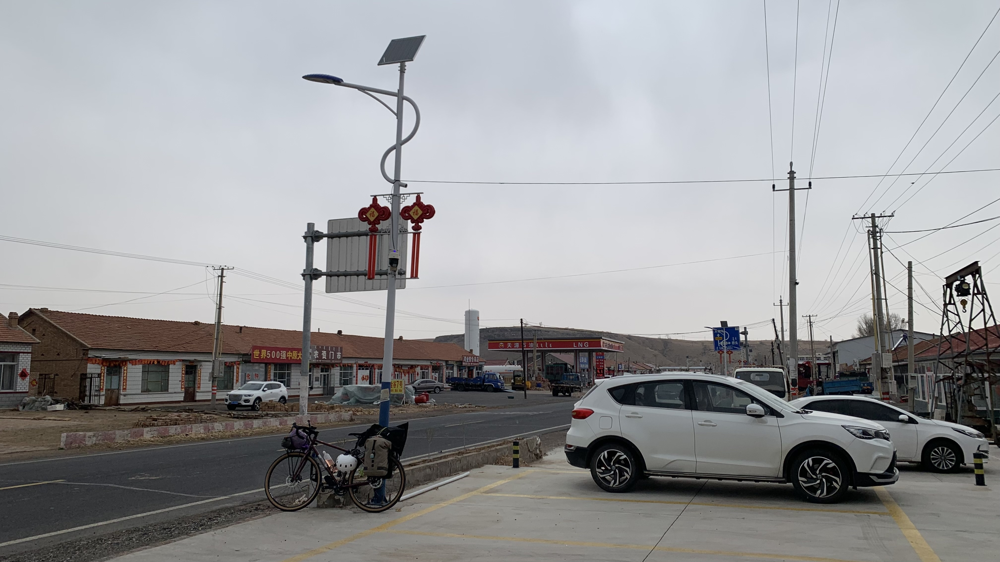
車子一推出門就開始滴雨，幾分鐘後大雨就下來了。
老闆不知道去了哪裡，找不到人拿不到押金也不能離開。問了對面的商店，跑到加油站旁的農資行，找到老闆的老公，又說老闆已經回到旅店。終於找到老闆，她不耐煩地說自己不會使用支付寶，要我自己去農資行找她老公要錢。
大姐，昨天你就是用支付寶收我錢的啊！
由於我硬是不走，大姐打開手機把錢退回給我，來來回回終於在12:30出發。
昨天晚上用握了一天錯誤角度的疼痛手腕測試的結果就是手腕自己選了個不痛的位置。休息了一個晚上，雙手靠上握把瞬間就發現角度大有問題。倒是變速系統的狀況好了大半。
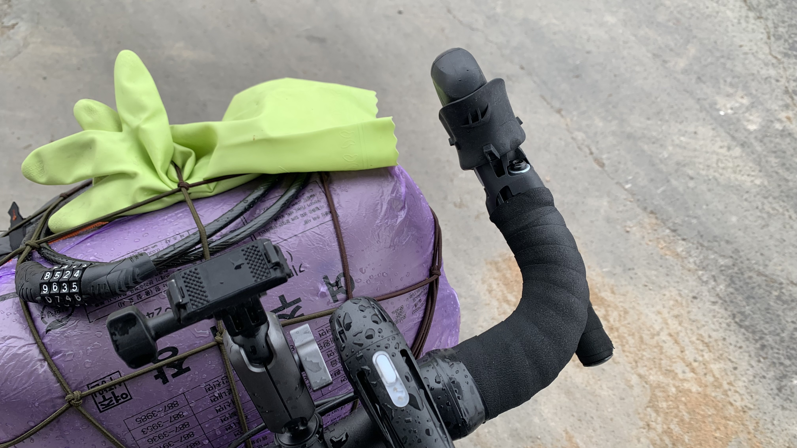
今天計畫每騎5-10公里，就停在路邊微調，將把手一點一點歸位。
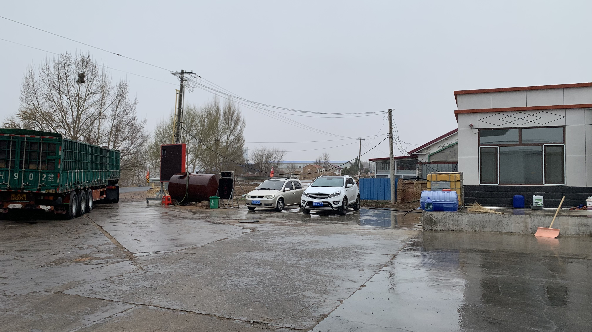
雨越下越大，不能在路邊修車，於是就停在加油站泵島下遮雨。卡車司機看到我在認真轉螺絲，走過來問：「來加油嗎？」我說對的。「加什麼油啊？」沒等我回答就上車離開了。
這次調整後變速竟然趨近無聲，手掌的肉墊也幾乎貼合二十三號的把手弧度。這種契合感使我一陣激動不斷在心裡重複：「我還記得你啊！終於回來了！」握了四十多天的握把，一起騎過兩千多公里，各式各樣的氣候地形，我的手已經長成跟他的弧度一樣的型態。手的記憶真是太神奇了。
體感上當然知道兩邊握把離正確角度還有很大距離，但是變速卡頓與鏈條摩擦金屬的聲音消失後，騎車的心情也開朗了起來。
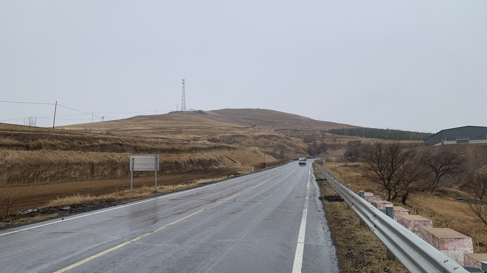
這邊的地貌相當有趣，一層一層的土疊起來像鬆餅一樣。
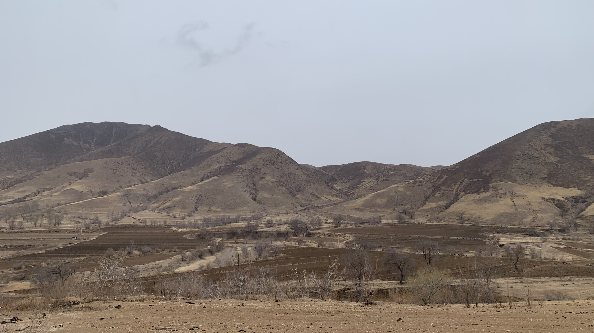
前面黑色散落在地上的不是垃圾，據說是冬天用來蓋土的塑膠布，一到春天就破破爛爛被風吹得到處都是。
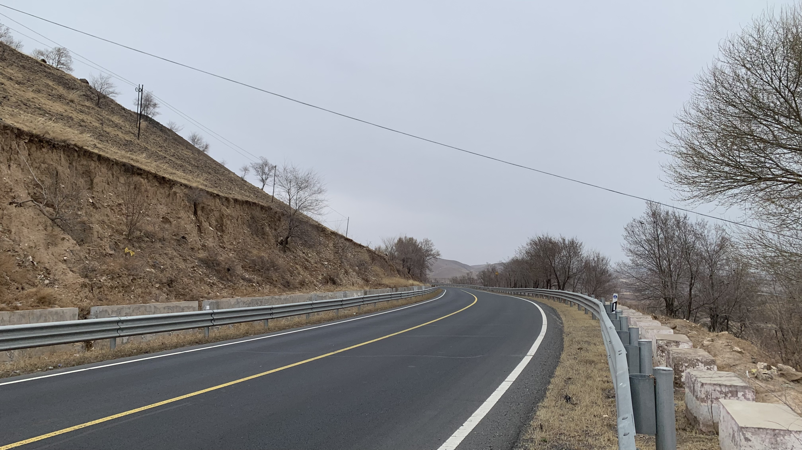
為了登上蒙古高原，往後幾天也會是這樣沿著縣道不斷緩慢爬過山再往下滑的路線。
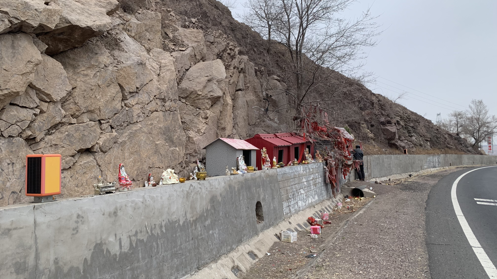
第一次在路邊看到小廟，供奉著觀音、財神等各路神明。
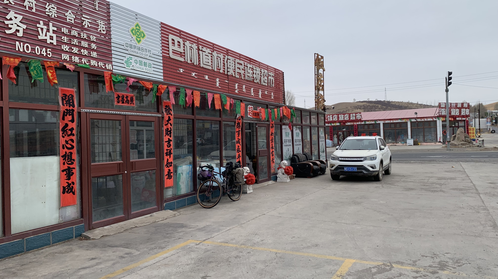
今天中午出發沒吃午餐，下午三點半經過一間擺了石獅的商店。停下來後決定再微調一次把手位置，順便到旁邊的公廁上了廁所。
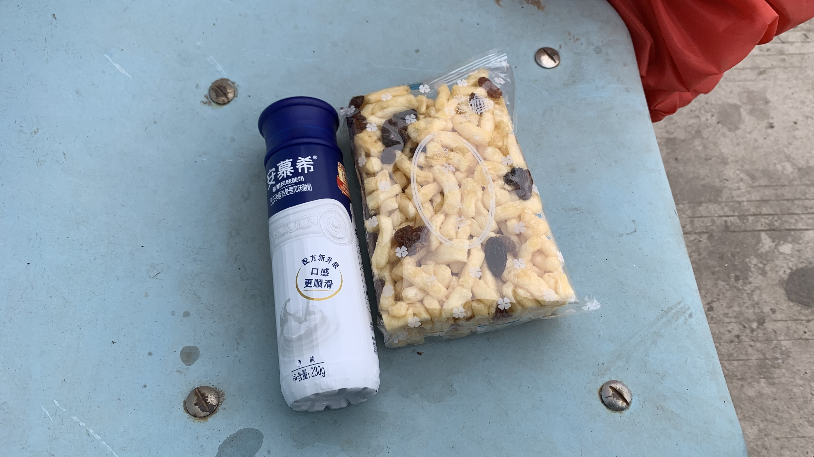
沙琪瑪是新朋友，還不錯吃。安慕希酸奶比普通的酸奶更濃稠，味道和一般的酸奶沒什麼分別。
老闆看我坐在外面吃東西，就讓我進去坐在暖氣旁邊聊天。沒想到他們倆都知道草原石人，到了內蒙後問的人都說沒聽過。抓緊機會再詢問他們知不知道位置，很可惜沒有獲得更進一步的資訊。不過兩位老闆都說那是為了祈求風調雨順之類的，上面會插旗子，以前還有，但是現在沒有了。（我們說的是一樣的東西嗎？）
和老闆夫婦聊天很有趣，是有想法、知識和人生經驗的人。聊天的時候陸續來了幾位客人，還有賣散裝花生的廠商來談上架合作，看老闆和他們的應對相當有趣。雖然老闆說開店很簡單，仍然十分佩服那些經營一家店、一個事業，或者所有從無到有建立一套運作方式去維繫一個空間的運作的人。他們的人生背後關係到的人和事，客戶、供應商、來往的工人都是無限地延伸出去的。
天南地北聊著，一不小心坐得太久，出來已經是下午四點二十了。
剛剛在商店門口很多餘地想試試看多調一點把手角度，結果又變成高低不一的狀態。不能再停下來微調了，必須開始往城鎮移動。
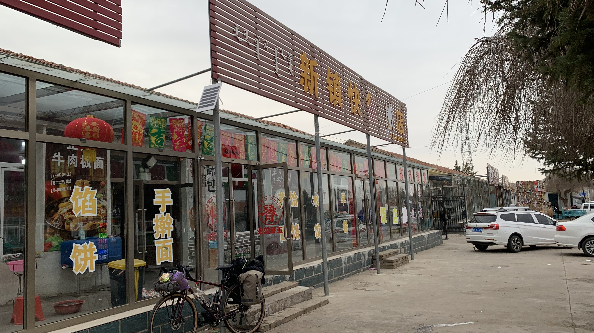
雖然還能感受到手掌的受力不均，自從早上發現把手的位置越接近原位，變速就越順暢的道理後，騎乘速度又恢復了不少。進入下一個城鎮，馬上開始搜尋看起來可能很便宜的住宿，立刻就在路邊發現一件疑似經營旅店的餐廳。
走進去大聲說：「請問這邊可以住宿嗎？」老闆娘說：「有住宿，但你看了會嫌不乾淨。」老闆立馬打斷說：「你就帶他去看看吧。」
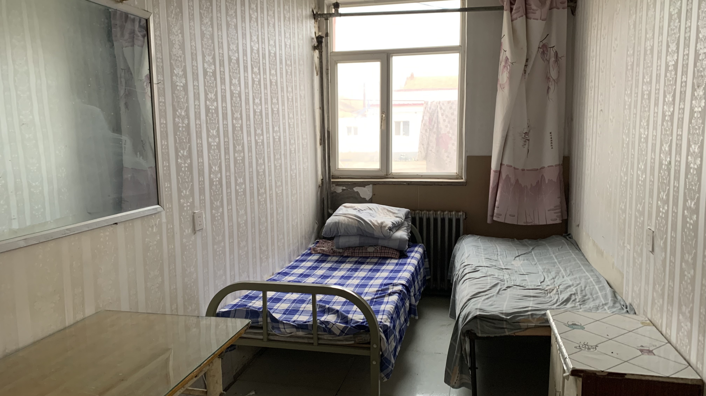
進房時地上桌上都是塵土和上一個房客留下的垃圾。
「這房間一晚多少？」
「你要住的話給我20元就行。」
「車子能進來嗎？」
「想進哪兒都行。你要住我就給你打掃，他們離開我都還沒整理。」
於是老闆拿起掃把，我則出去把二十三號帶進來。
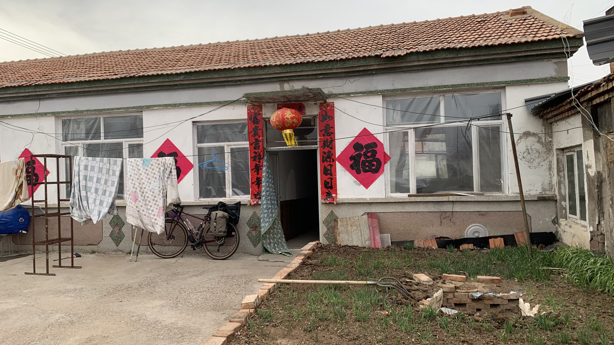
餐廳後面是個大院子，貼春聯的地方就是房間。
「廁所在養牛的那裡，晚上也有燈。」
順著老闆的手指的方向，走到院子對角的轉彎處。
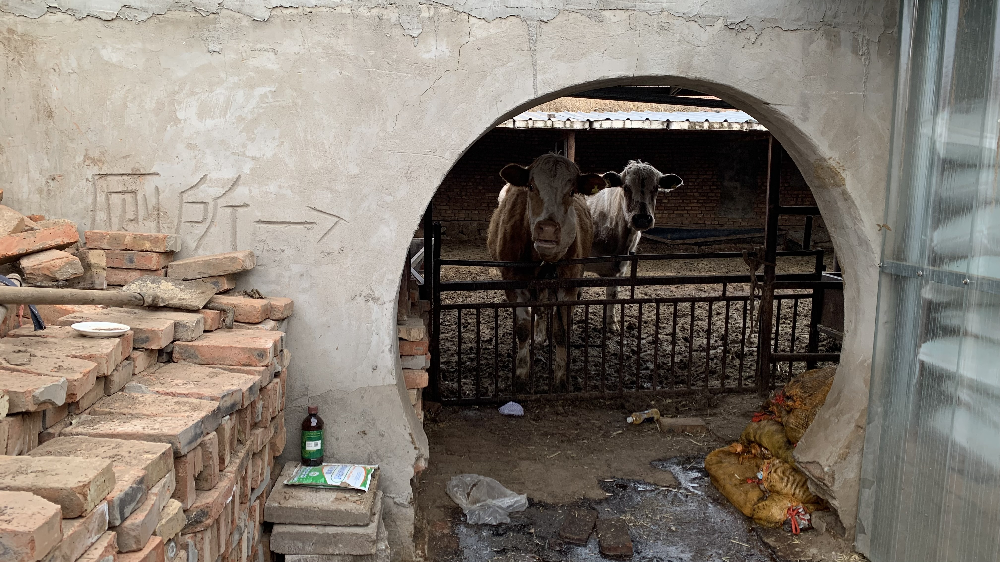
這兩隻牛吃草吃到一半抬頭看著我，我也看著他們。這景象讓我直接笑出來，實在是太有風情了。
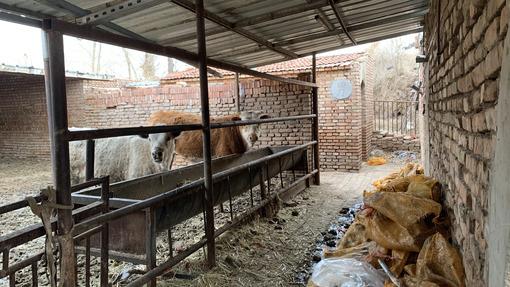
走進去又看到另外兩頭牛，難道前面餐廳的肉源就是這樣來的？後面紅磚搭建的地方是旱廁，裡面的場景不適合拍照。
回到房間煮了糧食袋中放了好多天的累贅的泡麵，配菜是剛買的超商鐵蛋。棉被的味道太重，於是拿出露宿袋包裹著睡袋準備睡覺。
把露宿袋的束口鎖緊躲在裡面，濃烈的氣味還是一陣一陣衝擊鼻腔，這棉被應該有十年沒洗過。
今天的一切都很不錯。
今日花費： 午餐 、住宿 20元